Git workflows
Tirer profit de Git au maximum
Rappel : système décentralisé
Rappel : merge

Rappel : rebase
rebase = réécriture d'historique

Rappel : rebase
autre exemple d'utilisation : mettre à jour une branche

Rappel : rebase
autre exemple d'utilisation : nettoyer l'historique
Workflow centralisé
- Chacun clone le repository de référence
- Une seule branche requise : master
- Tout le monde publie son travail sur master
- Fonctionnement proche de SVN
Workflow centralisé

Workflow centralisé

Workflow centralisé

Workflow centralisé
Workflow centralisé
Avantages
- Le plus abordable pour une équipe qui vient de SVN
- Intégration continue facile
- Merge / résolution de conflits faciles
Workflow centralisé
Limitations
- Pas pratique pour des grosses équipes
- Moins facile de faire des code reviews
- Une feature commencée doit être terminée pour la release (1)
- N'offre pas le choix d'intégrer ou non une feature (2)
(1) : augmenter la fréquence des release et segmenter les features aide à régler ce problème (2) : les feature toggles peuvent aider à régler ce problème
Workflow feature branch

Workflow feature branch
Workflow feature branch
Avantages
- Séparation claire des features
- Apporte une grand flexibilité pour les équipes plus grandes
- Pratique pour les code reviews ou discuter sur le code
- Feature en cours lors d'une release : plus besoin de code freeze
Workflow feature branch
Limitations
- Intégration continue plus complexe à mettre en place (1)
- Refactorings transverses moins aisés
- Pas encore assez structuré pour des équipes vraiment larges
- Intégration des branches : facile avec Git, mais doit tout de même être faite
- Attention à l'effet tunnel des branches qui durent trop longtemps
(1) : Est-ce qu'on peut encore parler d'intégration continue ?
Workflow Gitflow
Exemple d'utilisation, avantages, inconvénients, dans quel cas l'utiliser
Workflow Fork (Github)
Exemple d'utilisation, avantages, inconvénients, dans quel cas l'utiliser
Lectures supplémentaires